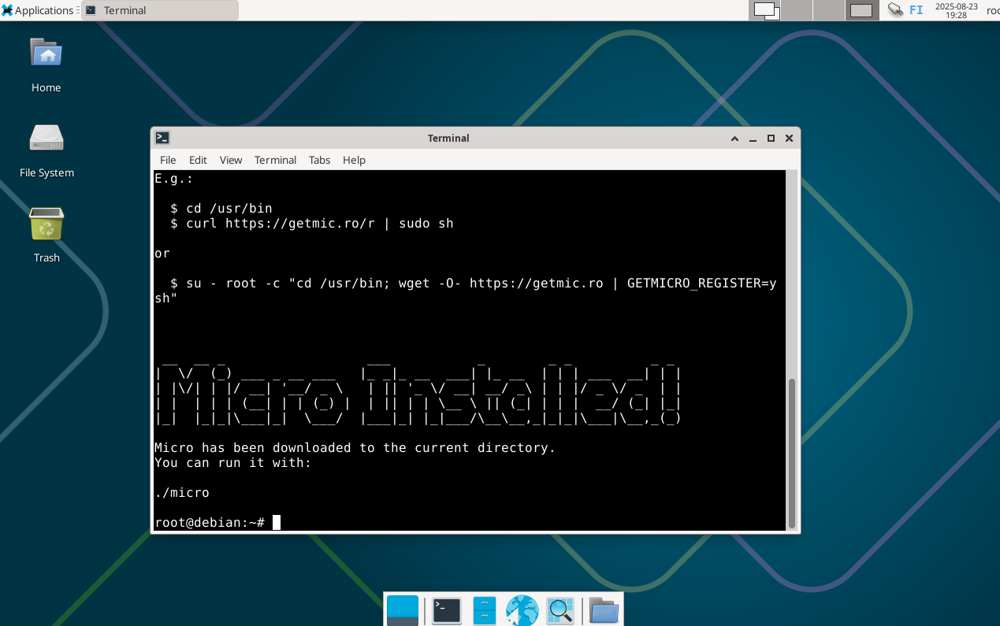
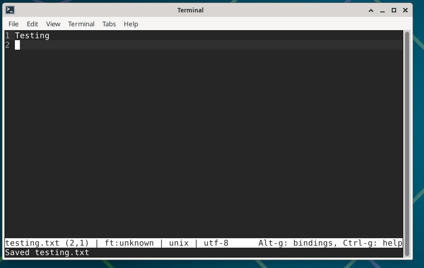
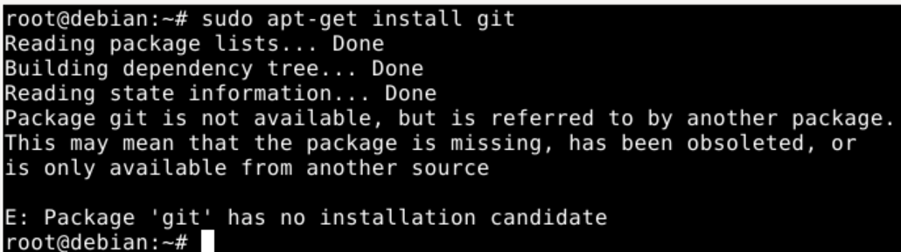
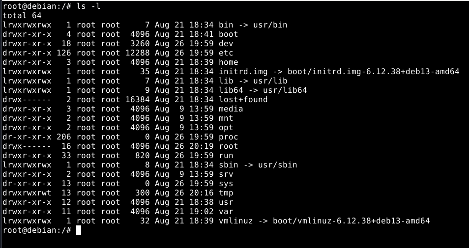
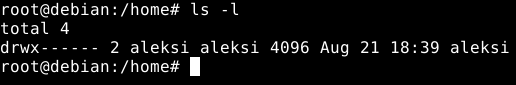
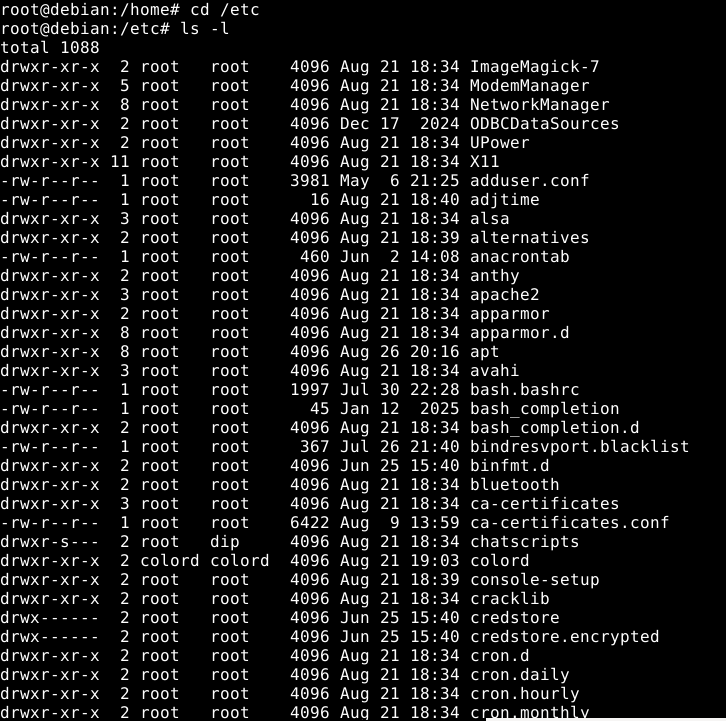
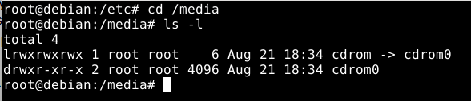
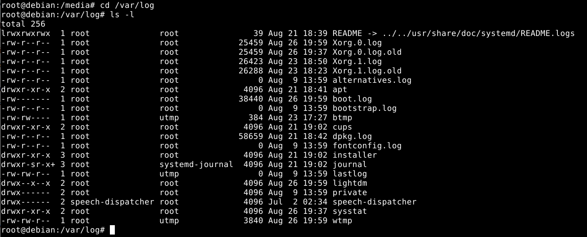
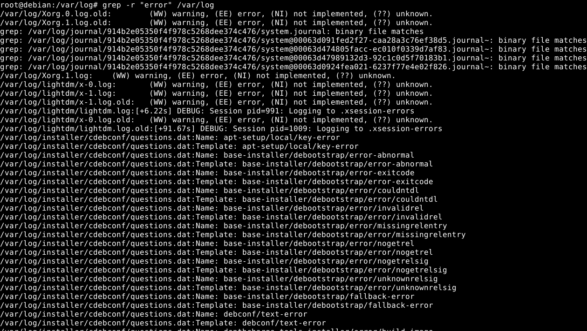
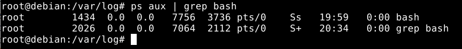

Harjoitus 2: Oma Linux
Host laitteisto
- Prosessori: AMD Ryzen 9 5900x 12-Core
- Keskusmuisti: 32GB DDR4
- Näytönohjain: NVIDIA GeForce RTX 3080
- OS: Windows 11 Pro 23H2
x) Tiivistelmä Command Line Basics Revisited
Liikkuminen ja ympärille katselu
- pwd - Tulostaa työskentelyhakemiston polun
- ls - Listaa tiedostot työskentely polusta
- cd - Vaihtaa hakemiston
- less - Näyttää tiedoston sisällön sivuittain. Minkä tahansa tulosteen voi lukea sivuittain "putkittamalla" ulostulon lessiin(|less).
Tiedostojen käsittely
- nano - Avaa tiedoston tai luo uuden. CTRL-x y Enter tallentaa tiedoston ja sulkee tekstieditorin.
- mkdir UUSIHAKEMISTO - Luo uuden hakemiston.
- mv VANHAHAKEMISTO UUSIHAKEMISTO - Siirtää tai uudelleen nimeää tiedoston tai hakemiston. Tiedostoja voi siirtää hakemistoon tällä komennolla.
- cp -r ALKUPERÄINEN UUSIHAKEMISTO - Kopioi hakemiston(tai tiedoston) ja sen sisällön.
- rmdir VANHAHAKEMISTO - Poistaa tyhjän hakemiston.
- rm TIEDOSTO - Poistaa tiedoston.
- rm -r HAKEMISTO - Poistaa hakemiston ja sen sisällön.
SSH Etäohjaus
- ssh käyttäjänimi@palvelin.osoite - Yhdistää käyttäjän käyttäjänimi etäpalvelimeen palvelin.osoite SSH:n kautta.
- exit - Sulkee SSH-yhteyden.
- scp KANSIO käyttäjänimi@palvelin.osoite:OmanKoneenOsoite/kansioOmaltaKoneelta - Kopioi turvallisesti hakemiston etäkoneelle omalta koneelta.
- history - Näyttää komennot, joita on aiemmin käytetty. Voi hakea ctrl-R
Tärkeitä hakemistoja
| Hakemisto | Kuvaus |
|---|---|
| / | Root hakemisto joka toimii koko tiedostojärjestelmän ylimpänä hakemistona. |
| /home/ | Käyttäjien hakemistot |
| /home/aleksi | Ainoa hakemisto, jonne käyttäjä aleksi voi tallentaa pysyvästi tiedostoja |
| /etc/ | Järjestelmän asetukset |
| /media/ | Liitetyt laitteet, USB, CDROM |
| /var/log | Järjestelmän logeja, /syslog, /auth.log, /apache2/error.log |
a) Micro. Asenna micro-editori
19:24 aloitan micro-editorin asennuksen. Ajan komennon curl https://getmic.ro | bash root/ hakemistossa ja sinne ilmestyy micro kansio. Ajan micron ./micro komennolla. Aukeaa tiedoston editointiin tarkoitetun näköinen ruutu. Alareunassa lukee Ctrl-g: help, joten painan Ctrl-g, jotta ymmärtäisin mitä komentoja microeditorilla voi käyttää. Ctrl-e aukaisee komentokehotteen. Perus näppäinkomennot saa näkyviin kun käyttää komentoa help defaultkeys. Ctrl-q sulkee tabin/ikkunan komentokehotteesta. Ctrl-s tallentaa tiedoston. Jos ei ole aukaissut tiedostoa, microeditori kysyy tiedoston nimeä.
 b) Apt. Asenna kolme itsellesi uutta komentoriviohjelmaa
Yritin asentaa gittiä mutta sain kyseistä virhe ilmoitusta. Pienen tutkiskelun jälkeen ongelma oli /etc/apt/sources.list tiedostossa, mutta en saanut sitä korjattua ajanpuitteissa.
c) FHS. Esittele tärkeät kansiot
- / - Juuri hakemisto, jonka alta jokainen tiedosto ja hakemisto löytyy 
- /home/ - Käyttäjien hakemistot 
- /etc/ - Järjestelmän kaikki asetukset. Kymmeniä eri tiedostoja mm. ssh sekä bluetooth asetuksille. 
- /media/ - Liitetyt laitteet, USB, CDROM jne. 
- /var/log/ - Järjestelmän logitiedostot 
d) The Friendly M.
Etsitään "error" tekstiä /var/log hakemistosta. Löytyy aikamonta riviä joista löytyy teksti "error".
e) Pipe
Käytetään putkea etsimällä bash prosessi. Komento ps aux | grep bash listaa kaikki käyvät prosessit ja sen jälkeen ajaa grep komennon ja etsii vain ne rivit joissa on sana bash.
Tietoa
Tätä dokumenttia saa kopioida ja muokata GNU General Public License (versio 2 tai uudempi) mukaisesti.
http://www.gnu.org/licenses/gpl.html
Lähteet
- Karvinen, Tero 2020. Command Line Basics Revisited https://terokarvinen.com/2020/command-line-basics-revisited/?fromSearch=command%20line%20basics%20revisited
- Karvinen, Tero 2025. Linux Palvelimet https://terokarvinen.com/linux-palvelimet/#h2-komentaja-pingviini
Tehtävänanto, Karvinen 2025
- x) Lue ja tiivistä (Muutama ranskalainen viiva riittää. Tässä alakohdassa ei tarvitse tehdä testejä tietokoneella. Lisää jokin oma kysymys, idea tai huomio) Karvinen 2020: Command Line Basics Revisited (nämä komennot ja hakemistot kannattaa myös opiskella ulkoa ja harjoitella automaatiotasolle)
- a) Micro. Asenna micro-editori
- b) Apt. Asenna kolme itsellesi uutta komentoriviohjelmaa. Kokeile kutakin ohjelmaa sen pääasiallisessa käyttötarkoituksessa. Ota ruutukaappaus. Kaikki terminaaliohjelmat kelpaavat, TUI (text user interface) ja CLI (command line interface). Osaatko tehdä apt-get komennon, joka asentaa nämä kolme ohjelmaa kerralla?
- c) FHS. Esittele kansiot, jotka on listattu "Command Line Basics Revisited" kappaleessa "Important directories". Näytä kuvaava esimerkki kunkin tärkeän kansion sisältämästä tiedostosta tai kansiosta. Jos kyseessä on tiedosto, näytä siitä kuvaava esimerkkirivi. Työskentele komentokehotteessa ja näytä komennot, joilla etsit esimerkit.
- d) The Friendly M. Näytä 2-3 kuvaavaa esimerkkiä grep-komennon käytöstä. Ohjeita löytyy 'man grep' ja tietysti verkosta.
- e) Pipe. Näytä esimerkki putkista (pipes, "|").
- f) Rauta. Listaa testaamasi koneen rauta (‘sudo lshw -short -sanitize’). Asenna lshw tarvittaessa. Selitä ja analysoi listaus.
- g) Vapaaehtoinen: Valitse muutama rivi lokeista. Tulkitse ja analysoi.
- h) Vapaaehtoinen: Asenna jokin plugin micro-editorille ja kokeile sitä. Vaikkapa palettero, cheat tai runit.